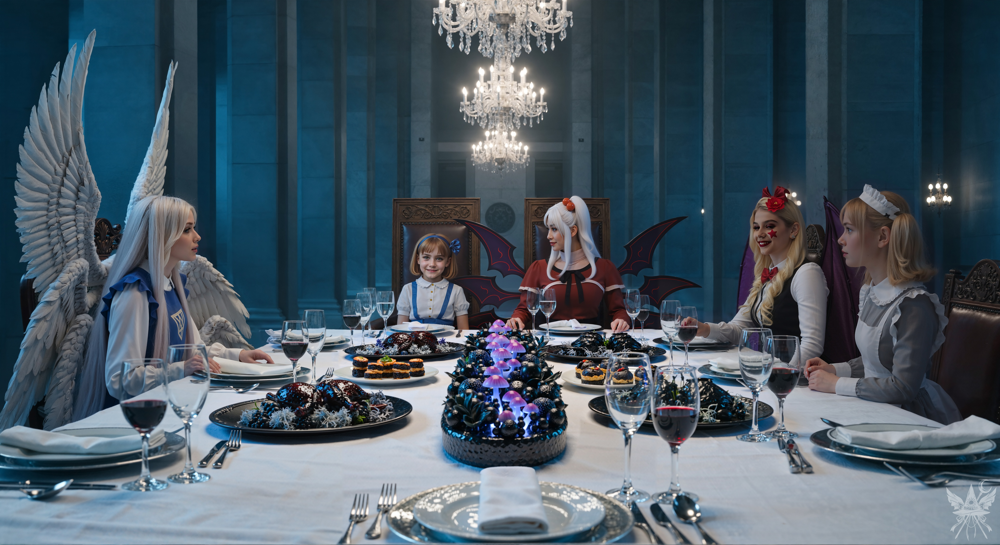

食堂には、食欲をそそる香ばしい匂いが漂っていた。あの魔都市の場末の居酒屋とは比べ物にならないほど洗練された香辛料の香りに混じり、故郷ギリシャを思わせるオリーブとハーブの微かな匂いまでが鼻腔をくすぐる。メイドたちが音もなく滑るように給仕を続ける中、あの少女はトイレのドアから離れると、まるで落ち着きのない小動物のように長大なテーブルの周囲をうろつき始めた。ぴょんぴょんと跳ねるような足音を立て、これ見よがしにため息をつき、しきりにメイド長へ「トイレに行きたい」と訴え続けている。
（もし本当にカナなら、こんな見え透いた芝居に付き合っている暇はないはずだわ……）
神綺が戻る前に、この膠着状態を打開しなければならない。
「夢子さん、神綺様は『誰からも目を離さないように』と仰っていましたよね？ アリスも例外ではないはずですが……」
探りを入れるように声を落とすと、夢子はピタリと動きを止め、少女へと向き直った。
「そうね、あなたの言うとおりだわ」
夢子は少女に向き直った。
「アリス、めそめそしないの。お母様を待ちましょう」
言い聞かされた少女が唇を尖らせた直後、重厚な扉が開く気配がした。給仕の悪魔たちが静かに壁際へ退がる中、空気が微かに震える。戻ってきた神綺の背後には、圧倒的な密度を持つ別の気配――大天使サリエルが付き従っていた。

冷え切った深海のような石造りの大空間を、シャンデリアの暖かな熱源が照らし出している。しかし、その輝きの下に並べられた美食は、どこか常軌を逸していた。純白のクロスの中心から放たれる、菌類特有のむせ返るような胞子の匂いと、網膜を焼くような毒々しい光。焦がされた肉の香ばしさに混じる、地球の生物とは明らかに異なる脂の甘い香りが、視覚的な美しさの裏に潜む生物学的な危険信号を脳に送り込んでくる。
神綺とサリエルという、次元を超越した存在同士が放つ静かな、しかし胃がねじ切れるような威圧感。その傍らで、メデアの肌をチクチクと刺すのは、限界をアピールするのをやめた少女からの、剥き出しの敵意に満ちた視線だった。さらに右奥からは、高価な銀器や果実がこすれる微かな音が絶え間なく響き、手前では、完全に魂が抜け落ちたちゆりの微弱な呼吸音だけが、不気味なほど規則的に続いている。
「皆様、どうぞお掛けになって。少しお話をしましょうか」
神綺が玉座に腰を下ろし、静かな声で促す。
「こんばんは、皆様。アリス、久しいですね。メデア殿、お目にかかれて光栄です」
サリエルが静謐な声で挨拶を述べ、六人がテーブルを囲んだ。
喫緊の問題は横に置かれたまま、異様な晩餐が始まる。次々と運ばれてくる温かな料理、冷たい前菜、甘美なデザート。テーブルの奥では、神綺とサリエルが高度で抽象的な概念について、静かに言葉を交わしている。下座に座るメデアの耳には、その会話の輪郭すら正確には掴めない。
少女は椅子の上で身をよじらせながらメデアを射貫くように睨み続け、エリスは料理を貪りながら隙あらばカトラリーを懐へ滑り込ませようと目論んでいる。そして、ちゆりだけが、目の前の料理に一切手をつけず、ただ虚空を見つめていた。
やがて、芳醇な香りの紅茶が注がれると、神綺は静かにグラスを置き、その場の空気を一変させるような声で宣言した。
「皆さん、このパンデモニウムで悲しい事件が起こりました。一体誰が、何のために、メイドたちを傷つけたのか……。真相を解明しなければなりません」
メデアは懐から、熱を帯びた妖奈の金属板を取り出し、テーブルの上へ静かに置いた。硬質な音が沈黙に波紋を広げる。
「このメイドは今朝、郊外で……酷い火傷を負って倒れていました。『アリスが……戻って……彼女を……止めないと……！』そう言い残して、息を引き取ったのです」
「ママ！ ひどい！ 証拠もないのに、アリスを疑うなんて……あんまりだもん！」
少女が弾かれたように悲鳴を上げ、神綺の袖にすがりつく。
「アリス、落ち着きなさい」
神綺の静かな制止が響く。
「他に何か？ メデア」
「ええ。他のメイドたちは、妖奈が北棟の地下室を掃除するために、あそこへ行ったと話していました。夢子さん、間違いないですね？」
夢子が頷く。
「だったら、北棟に隠れてる悪い悪魔の仕業に決まってるじゃない！ ママ、この意地悪な人は、アリスを陥れようとしてるんだもん！ さっきだって、トイレにも行かせてくれなかったんだから！」
メデアは冷ややかな視線を少女へ向け、口角をわずかに上げた。
「もし本当に不老不死なら、もうトイレに行く必要なんてないでしょう？ そんなことも知らないなんて……。ねえ、あなた、偽物よね？」
「確かにねぇ」
エリスが口の端にソースをつけたまま、ニヤリと笑って同調する。
「それにさ、『神綺様の血を引いてる』なんて自慢してたけど、どこにその血があるわけ？ 神綺様に拾われたただの捨て子じゃないの？」
少女は一瞬言葉を詰まらせ、大粒の涙を溜めて神綺を見上げた。傍らで事態を見守っていたサリエルが、静かな、しかし重みのある声で介入する。
「確かに、神綺様はアリスが実の娘であるとは、一度も仰っておられませんでしたね。……少々、不可解な話でございます」
「ち、違うもん！」
少女は顔を真っ赤にして叫んだ。
「ママはアリスを育ててくれたの！ アリスに魂の一部をくれたんだから、ママは本当のママだもん！ それに……、この悪魔は泥棒よ！ 屋敷から花瓶を盗んだのを見たわ！ ねえ夢子、あいつを立たせて調べて！」
夢子は厳しい目でエリスを見て、頷いた。エリスは舌打ちをしながら、渋々立ち上がる。
次の瞬間、ドレスの襞から硬質な鈍い音がして、陶器の花瓶が床に転がり落ち、無惨に砕け散った。
（……最悪だわ）
「ちょ、ちょっと待って！ 違うってば！ 話を聞いてよ！」
慌てて後ずさるエリスを前に、夢子はもう投げ剣を構えていた。
「夢子さん、お待ちください！ エリスは確かに手癖が悪いですが、私たちはそんな真似をするためにここに来たわけではありません。地下室で何者かに襲われて、彼女に助けられたのです！ ちゆりが証言できます！」
メデアは立ち上がり、隣で抜け殻のように固まっているちゆりへと振り返った。
「ちゆり、映像の記録があるなら見せて！ 早く！」
しかし、ちゆりの瞳は虚ろなまま、メデアの声に何の反応も示さない。苛立ちと共に神綺の方へ向き直り、さらに言葉を紡ごうとしたその時。
背後から、ひどく冷たく、感情の抜け落ちた声が鼓膜を打った。
「いい加減にしろよ……」
聞き慣れた快活な響きは微塵もない。地の底から這い上がってきたような、呪詛に似た呟き。
「ちゆりが、ちゆりがって……。私はお前らの便利な道具じゃないんだ。いつもいつも尻拭いばかりさせられて……もう、ウ・ン・ザ・リだ」
直後、真後ろの空気が爆発的に膨れ上がり、猛烈な殺気がメデアの背筋を駆け上がった。重厚な木材が風を切り裂く、低く恐ろしい唸り。晩餐会の優雅な静寂を物理的に粉砕する、理性を完全に喪失した野蛮な暴力の気配。
後頭部に、焼け付くような鈍い衝撃が走った。
視界が反転し、意識が急速に暗い底へと沈んでいく。薄れゆく思考の中で、ただ一つの疑念だけがぐるぐると渦を巻いていた。
（……まさか、ちゆり……？）